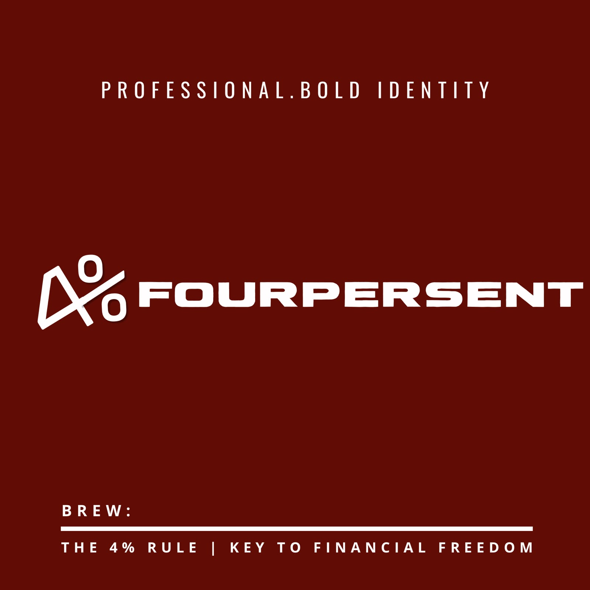

SELAMAT DATANG DI FOURPERSENT
Nikmati secangkir kopi dengan rasa yang istimewa dan suasana yang nyaman.
Lihat Menu
CERITA KAMI
diambil dari "the 4% rules" aturan 4% digunakan secara displin teliti dan dari hal kecil untuk menuju kebebasan finansial yaitu finansial freedom, makna yg berkaitan dengan kopi adalah setiap kopi setiap produksi produk kami, kami selalu profesional dan cita rasa kami memiliki identitas tersendiri, selalu disiplin dan teliti dalam menyajikan setiap produk